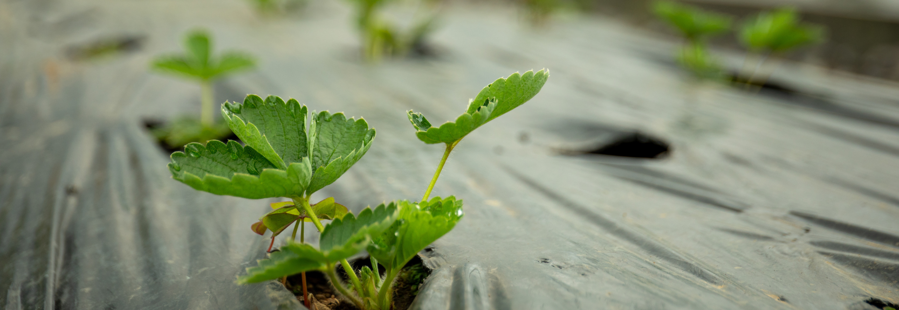
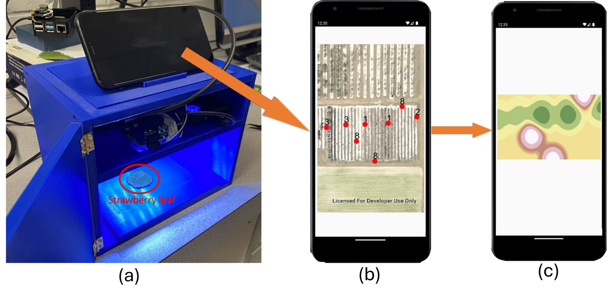
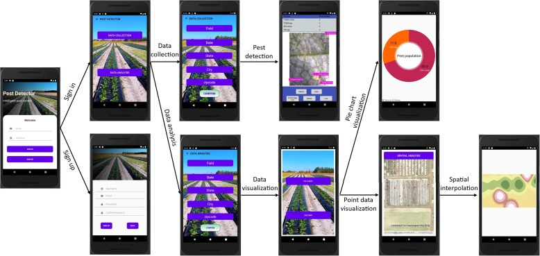
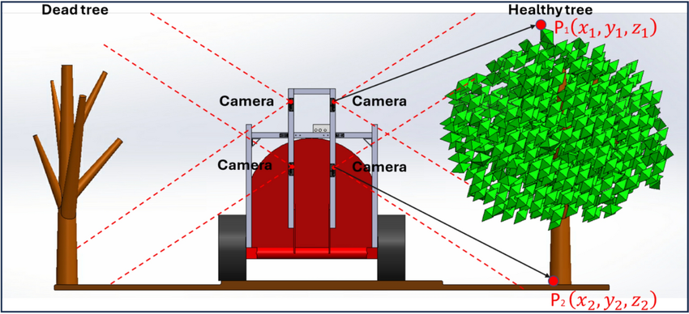
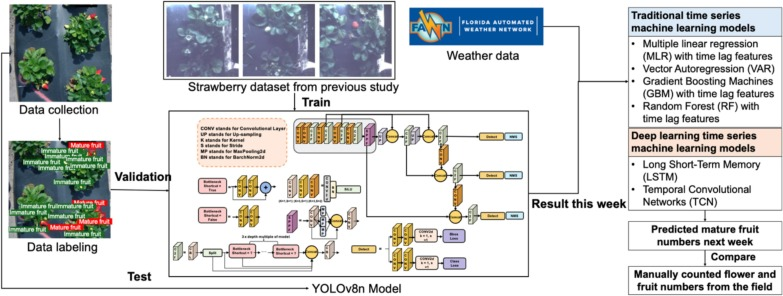
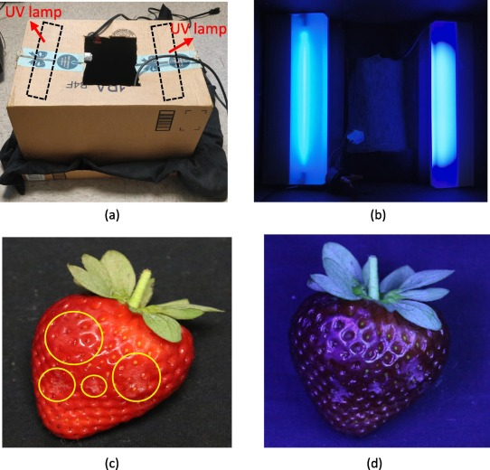
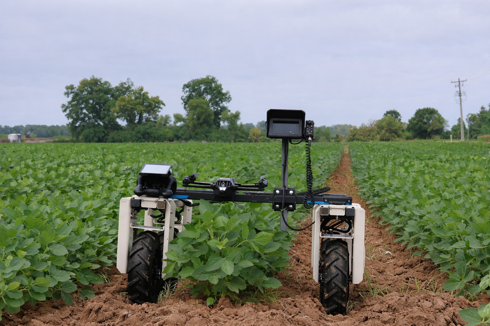

The Zhou Research Group develops precision agriculture technologies powered by artificial intelligence, computer vision, remote sensing, and robotics. Our goal is to create practical, field-deployable tools — from smartphone apps to autonomous monitoring systems — that help agricultural producers make data-driven decisions, reduce costs, and promote sustainable practices across Louisiana and beyond.

Two-spotted spider mites (TSSM) are a major arthropod pest in strawberry fields. Our lab developed deep learning models using YOLO architectures to detect and count TSSM and predatory mites from smartphone images. These models are integrated into a portable imaging device and smartphone application that provides real-time pest counts, spatial distribution mapping via interpolation models, and site-specific management recommendations — enabling growers to apply the right amounts of pesticide in the right locations.

We develop integrated mobile applications that combine AI-based detection with geospatial analysis. Users capture leaf images using the portable device, and the app automatically identifies and counts pests, saves data with GPS coordinates, and generates spatial distribution maps using kriging interpolation. These maps guide precision spraying decisions, reducing pesticide usage and increasing profit margins for growers.

Agrosense is an advanced AI-powered sensing system designed for real-time phenotypic data collection in orchards. The system integrates four RGB-D cameras with a Jetson Xavier edge computing platform to perform tree crop counting, canopy density classification, and tree height estimation. Tested on 337 citrus trees, YOLOv8 achieved 0.977 mAP for trunk detection and 95% field accuracy, completing phenotyping tasks 515% faster than manual methods.

We leverage drone-based and near-ground imaging combined with deep learning (YOLOv3, YOLOv7) for automated strawberry maturity classification, fruit counting, and yield prediction. Our enhanced tracking algorithms integrate moving direction, velocity, and spatial information for precise flower and fruit monitoring across growing seasons, enabling optimized harvest planning through time-series weather data integration.

We developed a deep learning-based system using Mask R-CNN for detecting strawberry bruises under UV and incandescent lighting. Under UV light, the system achieved an F1 score of 0.99 for bruise detection and 0.92 for severity classification. This technology assists farmers in automated quality inspection on processing lines and harvesting equipment, ensuring only high-quality fruit reaches the market.

Our lab is developing autonomous ground-based platforms equipped with sensors for automated field scouting, data collection, and precision agriculture operations. Combined with GPS technology, drones, and AI analytics, these systems form the backbone of our vision for fully integrated, technology-driven farm management in Louisiana's diverse agricultural landscape.